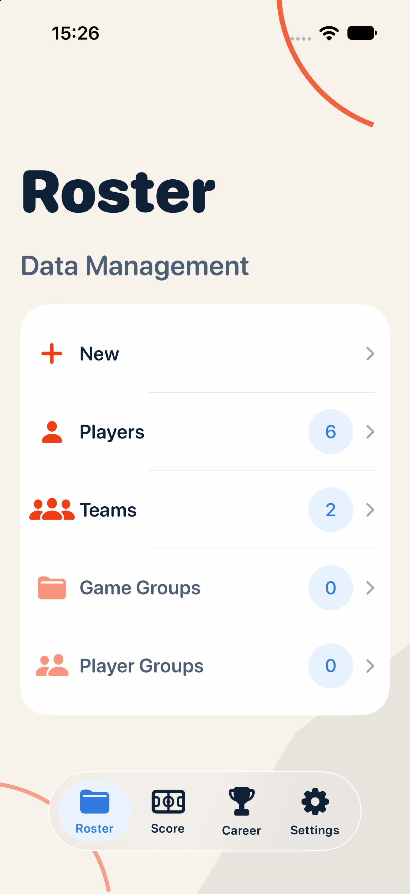
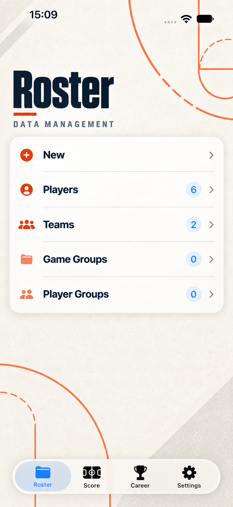
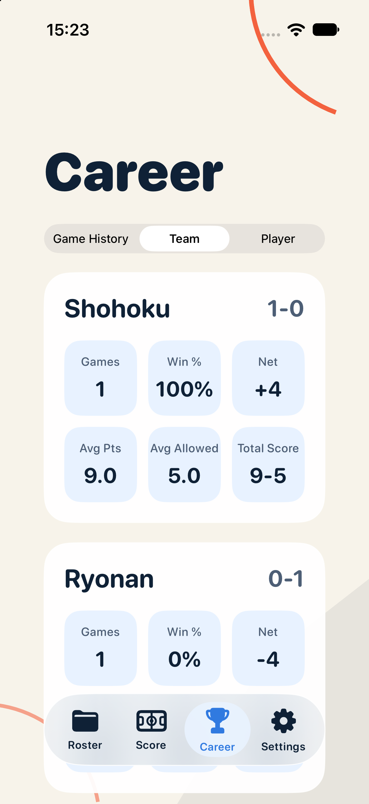
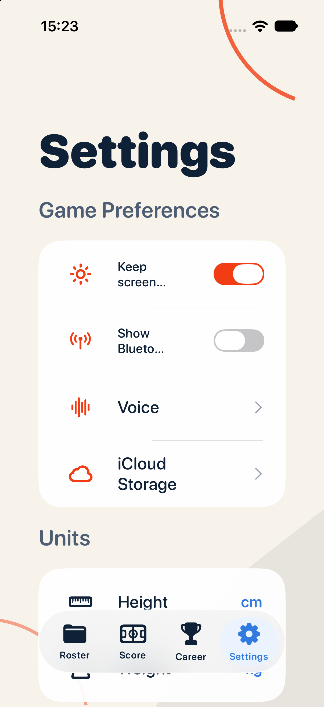

开发 Agent：Adaptive A 独立原型
状态：独立原型已编译并在 iPhone 17 运行
实现范围
- 新建独立 target：
AdaptivePrototype/BasketballRecordUIPrototype.xcodeproj。 - 复现现有管理、生涯、设置页面的布局语义和显示内容。
- 记分页只保留保护占位，没有对其进行视觉设计。
- 背景由 SwiftUI Canvas 绘制：纸张底色、角落球场线、低对比几何块；没有嵌入文字或整张海报图片。
- mock 数据只对应现有显示字段，不接入产品存储。
适配约束
- 背景图案不承载语言信息。
- 图案锚定在边角安全区，不覆盖状态栏、内容卡片和底部导航。
- 页面文字使用可压缩、可换行的 SwiftUI 布局，管理列表在 iPhone 17 上已修正为单行显示。
证据




构建命令使用 iPhone 17 Simulator、iOS 27.0、1206×2622；Debug build succeeded。产品 target 没有因本阶段新增修改。